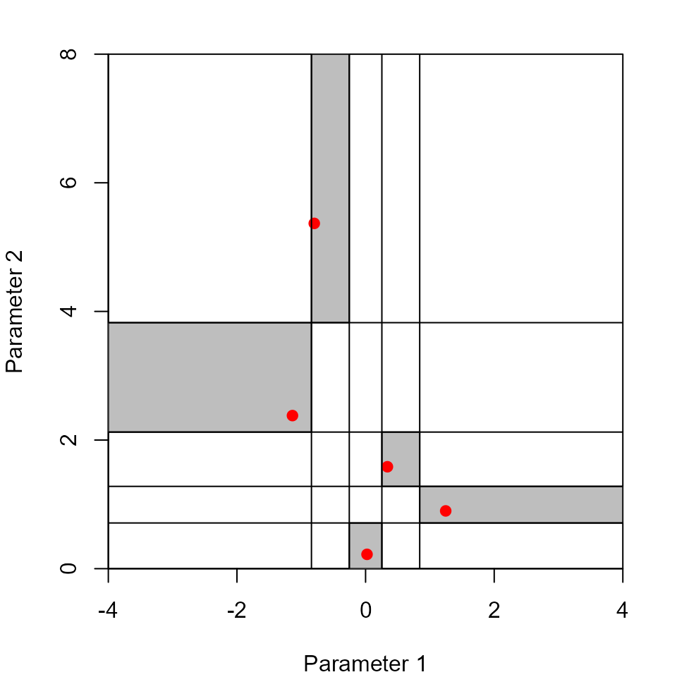
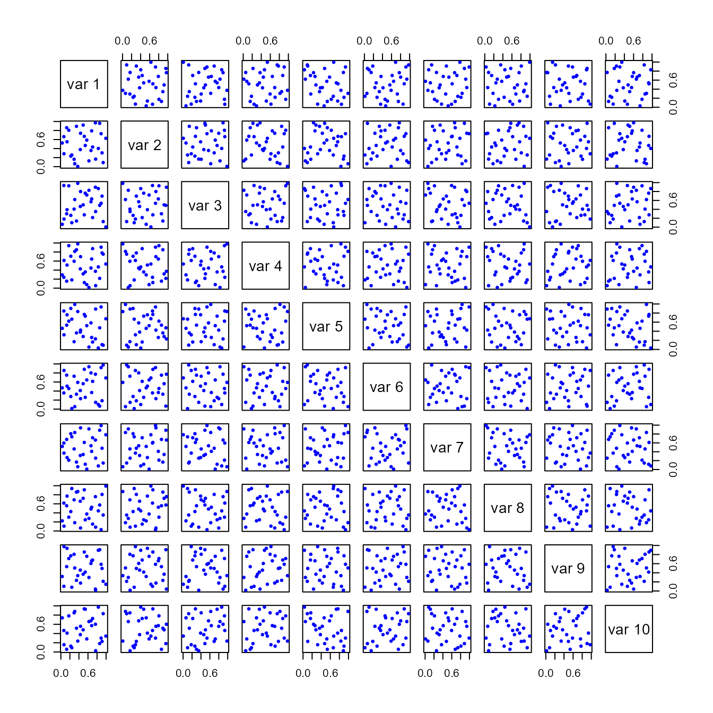

Basic Latin hypercube samples and designs with package lhs
Rob Carnell
2020-09-27
Source:vignettes/lhs_basics.Rmd
lhs_basics.RmdTheory of Latin Hypercube Sampling
For the technical basis of Latin Hypercube Sampling (LHS) and Latin Hypercube Designs (LHD) please see: * Stein, Michael. Large Sample Properties of Simulations Using Latin Hypercube Sampling Technometrics, Vol 28, No 2, 1987. * McKay, MD, et.al. A Comparison of Three Methods for Selecting Values of Input Variables in the Analysis of Output from a Computer Code Technometrics, Vol 21, No 2, 1979.
This package was created to bring these designs to R and to implement many of the articles that followed on optimized sampling methods.
Create a Simple LHS
Basic LHS’s are created using randomLHS.
# set the seed for reproducibility
set.seed(1111)
# a design with 5 samples from 4 parameters
A <- randomLHS(5, 4)
A
#> [,1] [,2] [,3] [,4]
#> [1,] 0.6328827 0.48424369 0.1678234 0.1974741
#> [2,] 0.2124960 0.88111537 0.6069217 0.4771109
#> [3,] 0.1277885 0.64327868 0.3612360 0.9862456
#> [4,] 0.8935830 0.27182878 0.4335808 0.6052341
#> [5,] 0.5089423 0.02269382 0.8796676 0.2036678In general, the LHS is uniform on the margins until transformed (Figure 1):
It is common to transform the margins of the design (the columns) into other distributions (Figure 2)
B <- matrix(nrow = nrow(A), ncol = ncol(A))
B[,1] <- qnorm(A[,1], mean = 0, sd = 1)
B[,2] <- qlnorm(A[,2], meanlog = 0.5, sdlog = 1)
B[,3] <- A[,3]
B[,4] <- qunif(A[,4], min = 7, max = 10)
B
#> [,1] [,2] [,3] [,4]
#> [1,] 0.33949794 1.5848575 0.1678234 7.592422
#> [2,] -0.79779049 5.3686737 0.6069217 8.431333
#> [3,] -1.13690757 2.3803237 0.3612360 9.958737
#> [4,] 1.24581019 0.8982639 0.4335808 8.815702
#> [5,] 0.02241694 0.2228973 0.8796676 7.611003
Optimizing the Design
The LHS can be optimized using a number of methods in the lhs package. Each method attempts to improve on the random design by ensuring that the selected points are as uncorrelated and space filling as possible. Table 1 shows some results. Figure 3, Figure 4, and Figure 5 show corresponding plots.
set.seed(101)
A <- randomLHS(30, 10)
A1 <- optimumLHS(30, 10, maxSweeps = 4, eps = 0.01)
A2 <- maximinLHS(30, 10, dup = 5)
A3 <- improvedLHS(30, 10, dup = 5)
A4 <- geneticLHS(30, 10, pop = 1000, gen = 8, pMut = 0.1, criterium = "S")
A5 <- geneticLHS(30, 10, pop = 1000, gen = 8, pMut = 0.1, criterium = "Maximin")| Method | Min Distance btwn pts | Mean Distance btwn pts | Max Correlation btwn pts |
|---|---|---|---|
| randomLHS | 0.6346585 | 1.2913235 | 0.5173006 |
| optimumLHS | 0.8717797 | 1.3001892 | 0.1268209 |
| maximinLHS | 0.595395 | 1.2835191 | 0.2983643 |
| improvedLHS | 0.6425673 | 1.2746711 | 0.5711527 |
| geneticLHS (S) | 0.8340751 | 1.3026543 | 0.3971539 |
| geneticLHS (Maximin) | 0.8105733 | 1.2933412 | 0.5605546 |


